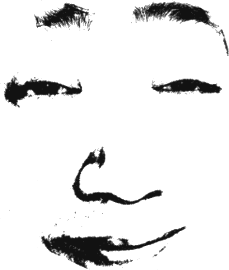

— page 06 / thoughts in the open
the journal.
things i think about. things i'm working through. no schedule.
posts / chronological
2026 · may 27
welcome, i guess.
first post. site is finally live at jixeral.site. some notes on what this place is, what it isn't, and what i hope it becomes.
soon
on being 17 and not knowing
a draft. probably will sit here for a while before i'm brave enough to post it.
soon
why goodnight punpun broke me
trying to write about this manga without being annoying about it. difficult.
"writing is just thinking, but slower."
— me, just now
